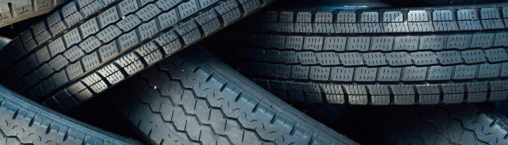
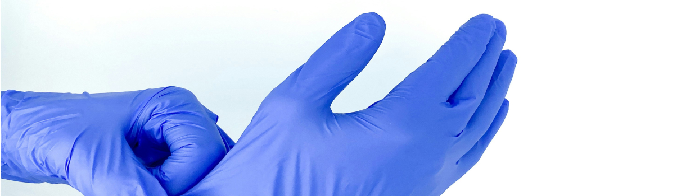

합성고무
자동차, 타이어 산업의 발달과 함께 국내 최초로 합성고무 생산을 시작해
SBR과 BR 등 범용 합성고무 세계 최대 생산능력을 보유하고 있습니다.
Styrene Butadiene Rubber
KUMHO SBR은 Styrene과 Butadiene을 저온 유화 중합하여 제조한 합성고무 제품입니다.
SBR은 천연고무(NR)에 비해 품질이 균일하고 특히 내열성과 내마모성이 우수하며,
타이어, 신발, 산업용품 등의 재료로 널리 사용되고 있습니다.
용도
-
타이어
Tire -
신발
Shose -
자동차
Car -
고무호스
Hose
특징
- ① 가공성 우수
- ② 천연고무에 비해 내마모성, 내열성 우수
Low-cis Polybutadiene Rubber
KUMHO LBR은 리튬 촉매를 사용하여 제조한 low-cis polybutadiene rubber(BR) 입니다. Cis 함량은 34.5%이며, 탄성이 좋고 14.5% 정도의 vinyl 결합구조를 가지고 있어 반응성이 좋아 HIPS(High Impact Polystyrene) 제조시 base polymer로써 주로 사용되는 합성고무 제품입니다.
용도
-
타이어
Tire -
신발
Shose -
Base
Polymer
특징
- ① 14.5% 정도의 vinyl 결합구조를 가지고 있어 반응성이 좋아 HIPS 제조에 사용됨
- ② 우수한 탄성 및 충격강도
Ultra High-cis Polybutadiene Rubber
네오디뮴 촉매를 사용하여 제조한 ultra high-cis polybutadiene rubber(BR) 입니다.
Cis 함량이 97% 이상인 제품으로 내마모성, 반발탄성, 내발열 특성이 우수하여 타이어, 골프공,
신발, 호스, 벨트 제조에 주로 사용되는 합성고무 제품입니다.
용도
-
타이어
Tire -
신발
Shose -
골프공
Golgball
특징
- ① 내마모성, 반발탄성 우수
- ② 내발열성 우수
LATEX
스타이렌-부타디엔 라텍스(Styrene Butadiene Latex) 및 카르복시 변성 스타이렌-부타디엔 라텍스 (Carboxyl 변성 Styrene Butadiene Latex)입니다.
용도
-
장갑
Gloves -
제지
Paper -
카페트
Capet
특징
- ① 100 Grade - 높은 접착력, 우수한 작업성 및 발포성. 섬유 부직포 기타 접착제 분야에 최적화
- ② 200 Grade - 모든 제지용 coater 및 제품 처방에 적용 가능 라텍스
- ③ 300 Grade - 고고형분, 저점도 제품 및 건축, 건설용의 라텍스